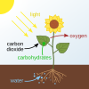

photosynthesis

Definition: Photosynthesis ( FOH-tə-SINTH-ə-sis) is a system of biological processes by which photosynthetic organisms, such as most plants, algae, and cyanobacteria, convert light energy, typically from sunlight, into the chemical energy necessary to fuel their activities. Photosynthetic organisms use intracellular organic compounds to store the chemical energy they produce in photosynthesis within organic compounds like sugars, glycogen, cellulose and starches. Photosynthesis is usually used to refer to oxygenic photosynthesis, a process that produces oxygen. To use this stored chemical energy, the organisms' cells metabolize the organic compounds through another process called cellular respiration. Photosynthesis plays a critical role in producing and maintaining the oxygen content of the Earth's atmosphere, and it supplies most of the biological energy necessary for complex life on Earth.
Source: Wikipedia
Wikipedia Page (Something wrong with this association? Let us know.)
Wikidata Page (Something wrong with this association? Let us know.)